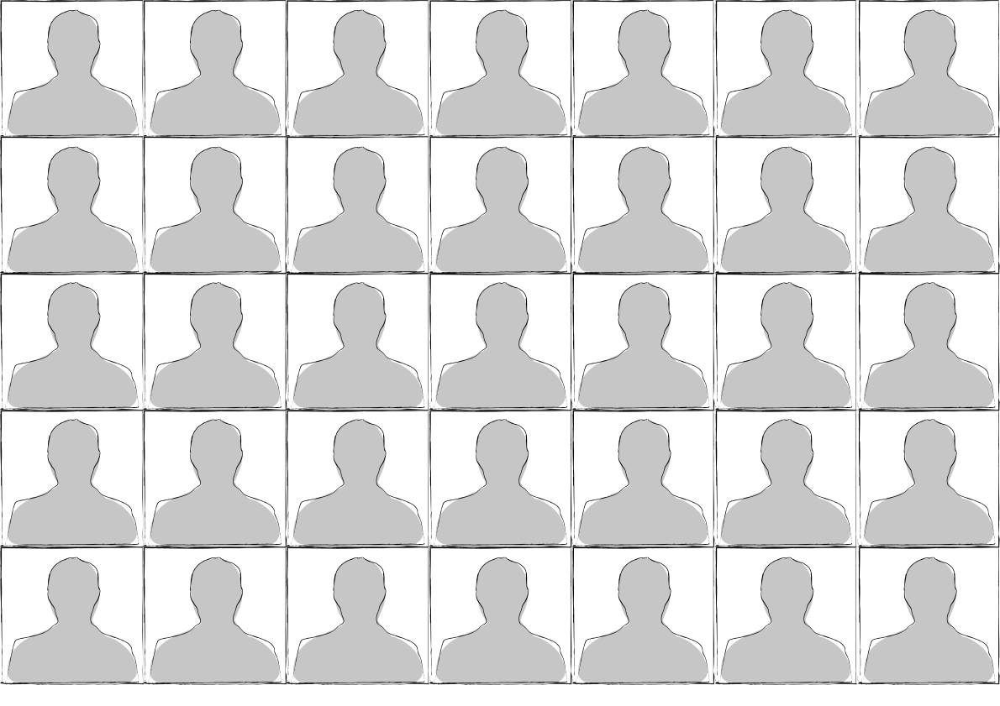
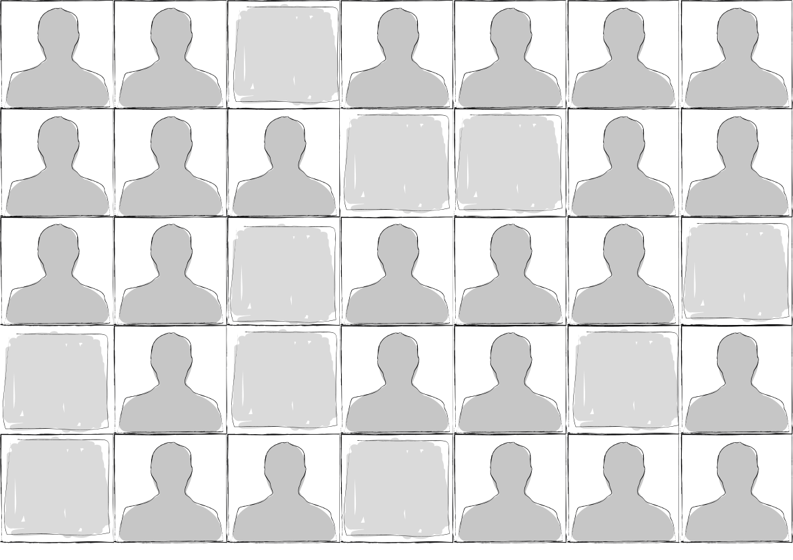
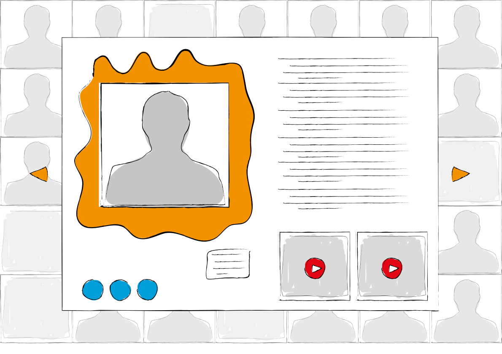
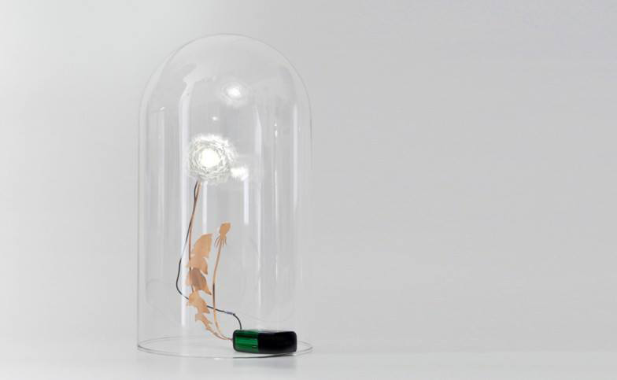
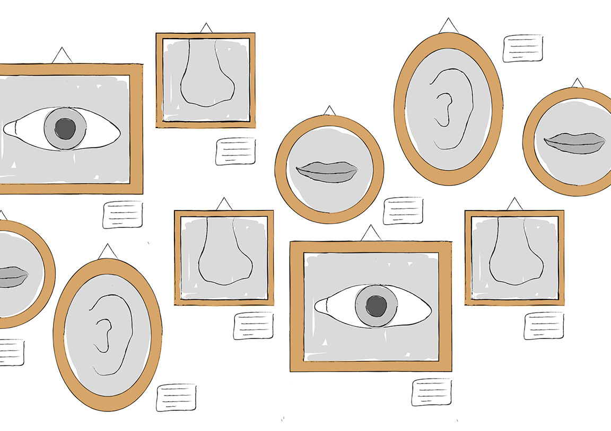
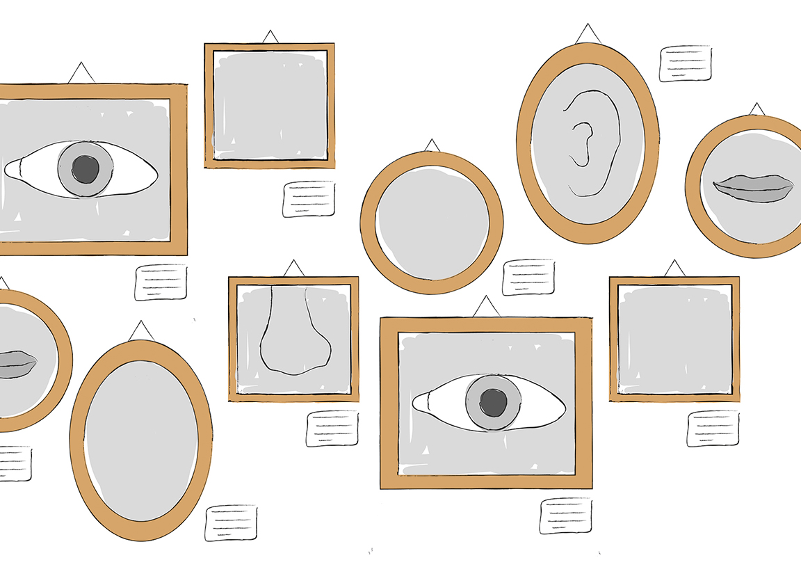
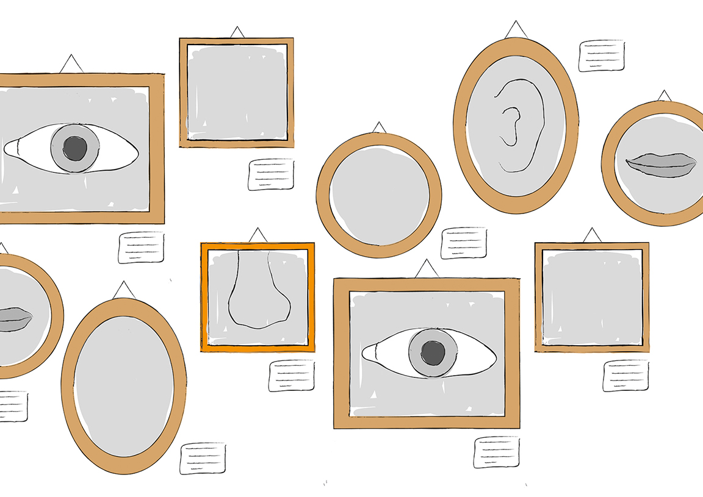
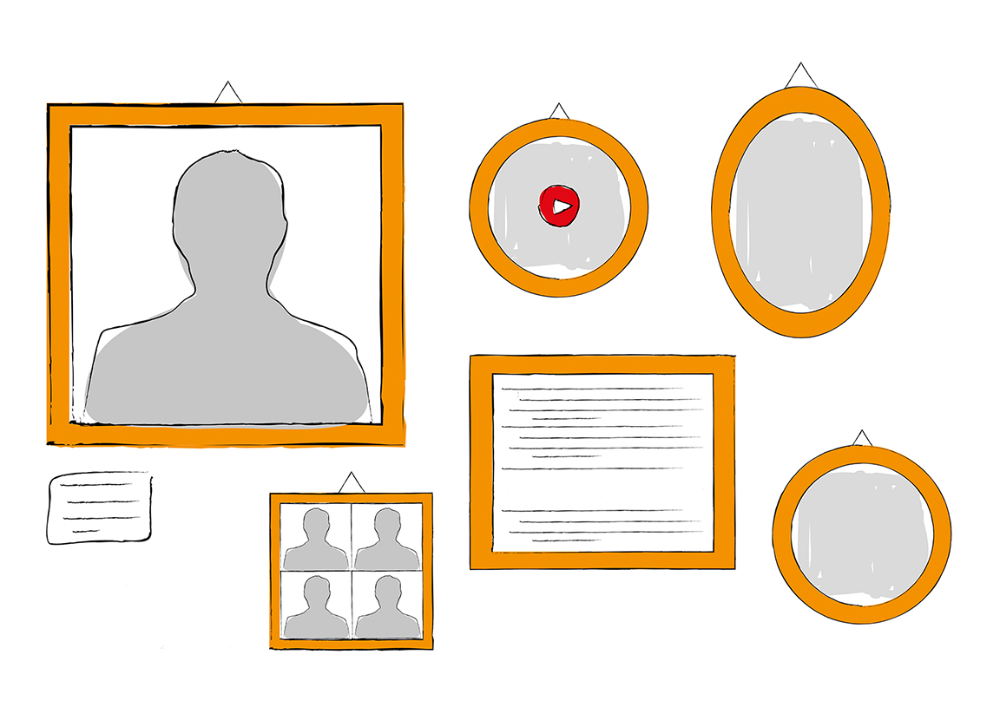

"Let's think out of the book."
"SiNTLUCAS ontwikkelt zich als een creatieve community die midden in de samenleving staat. SiNTLUCAS verbindt leerlingen, studenten, en medewerkers met oud-studenten, het bedrijfsleven, andere scholen en culturele instellingen."


"Hall of Fame."
"Standing in the hall of fame
and the world's gonna
know your name."



"Losbreken van het bekende."
- "I don't want to eat you.
I just get so hungry.
I'm just too big."
- "Has it ever occurred to you that
maybe you're not too big? That maybe
this place is just too small?"
"SiNTLUCAS Grow brengt je naar grotere hoogte door je creatief uit te dagen en je te ontwikkelen tot die creatieve ondernemer die in je schuilt. Of ga je verder studeren of werken bij een werkgever om te groeien en je los te breken van het bekende."




